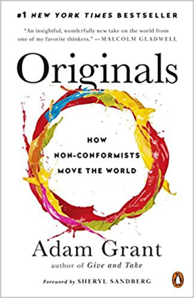
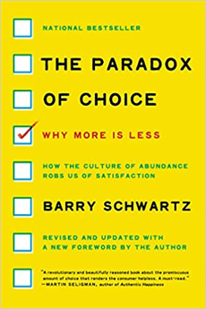
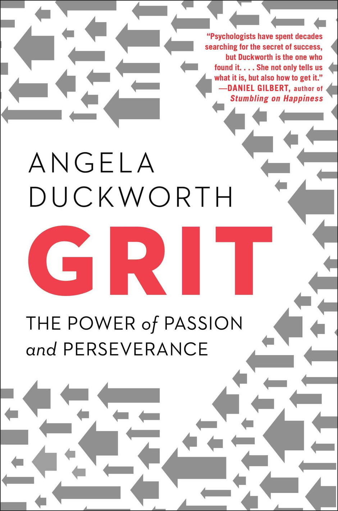

Michael Hempseed
TEDx Speaker
Professional Speaker
Business Owner
Writer

Videos and Books
Fascinating Psychology Topics
- Why incompetent people think they're amazing
- Barry Schwartz - Why do people get overwhelmed when they have too many choices.
- Longer and more in-depth version of his ted talk on the problems of having too many choices
- Why Brainstorming doesn't work
- Everything we know about addiction is wrong
- Sian Beilock - Why do some people choke under pressure and how to avoid this
- Is positive thinking always a good idea?
- Adam Grant - The surprising habits of original thinkers
- Which one makes you happier, winning lotto or becoming a paraplegic? The answer will surprise you!
- The Stanford Marshmello experiment
- Does money improve performance?
Fascinating Psychology Books
- Originals :
- How Non-Conformists Move the World 
- by Adam Grant
- Choke :
- What the Secrets of the Brain Reveal About Getting It Right When You Have To
- by Sian Beilock
- The Paradox of Choice :
- Why More Is Less 
- by Barry Schwartz
- GRIT :
- The Power of Passion and Perseverance 
- by Angela Duckworth